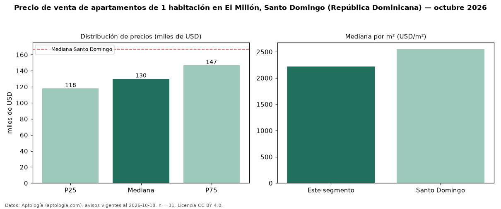

Precio de venta de apartamentos de 1 habitación en El Millón, Santo Domingo (República Dominicana) — octubre 2026
USD 130.000 es el precio mediano de apartamentos de 1 habitación en venta en El Millón, Santo Domingo (República Dominicana) (n = 31 avisos). Eso es 22 % por debajo de la mediana de Santo Domingo para apartamentos de 1 habitación (USD 167.046). Por metro cuadrado, la mediana es USD 2.217/m² (n = 30 avisos con área), 13 % por debajo de Santo Domingo (USD 2.551/m²). Son 13 % de los 245 avisos de apartamentos en venta de la zona, cuya mediana general es USD 215.000 (−40 %). El área mediana anunciada es 56 m². La mitad central de los avisos va de USD 118.000 a USD 146.796 (razón 1,2), una dispersión baja. Datos: Aptología (aptologia.com), CC BY 4.0 — https://www.aptologia.com/do/venta/santo-domingo/el-millon. Archivos: PDF, CSV con las cifras y gráfica PNG.

| Avisos únicos | 31 |
|---|---|
| Percentil 25 | COP 118.000 |
| Mediana | COP 130.000 |
| Percentil 75 | COP 146.796 |
| Mediana por m² | COP 2.216 |
Fuente: avisos vigentes de portales inmobiliarios recopilados por Aptología, deduplicados (mínimo 30 avisos únicos por celda). Precios pedidos, no cerrados. Fecha: 2026-10-18.